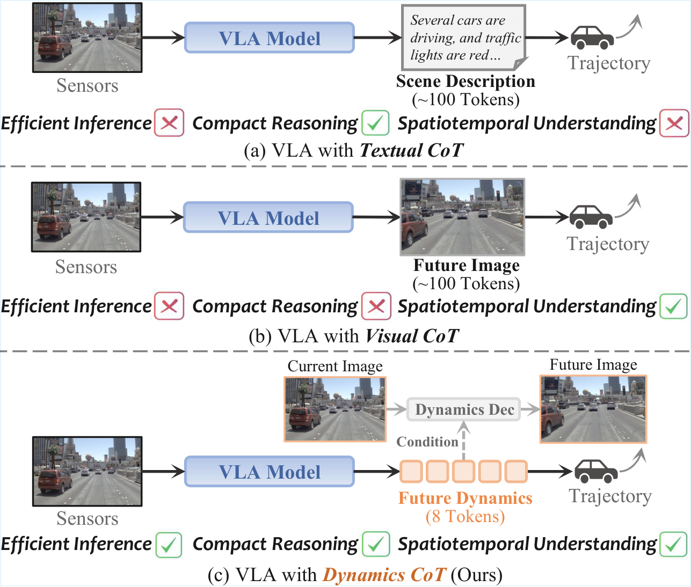
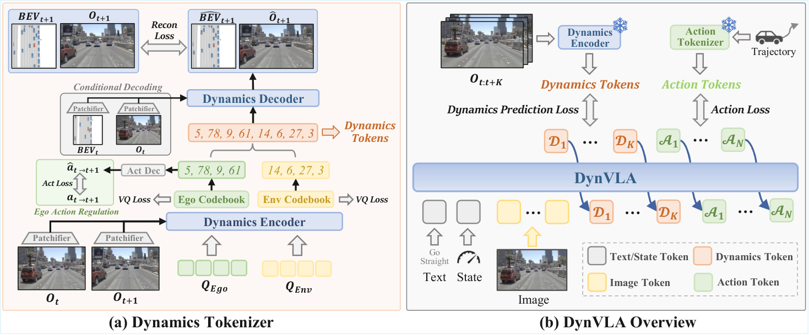
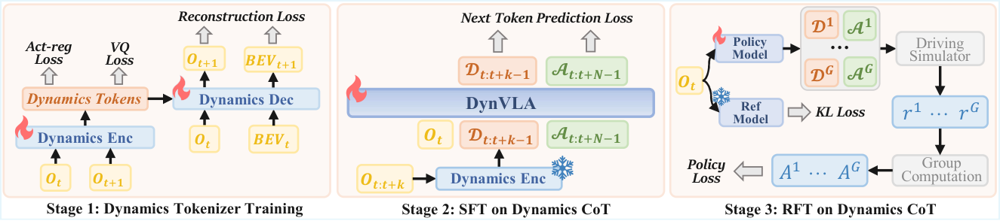
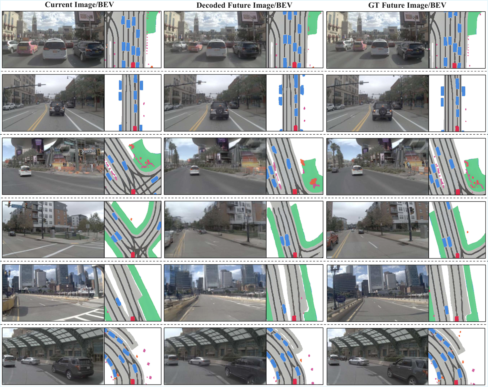
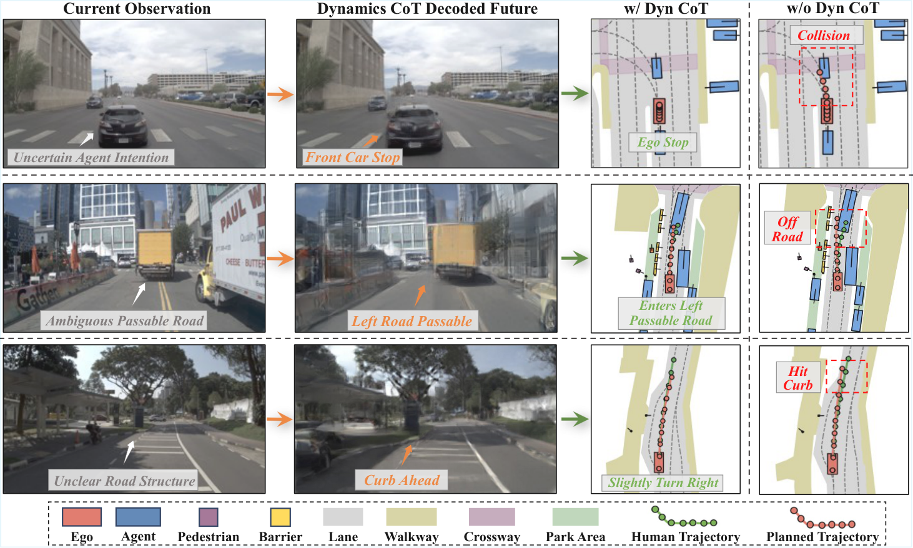
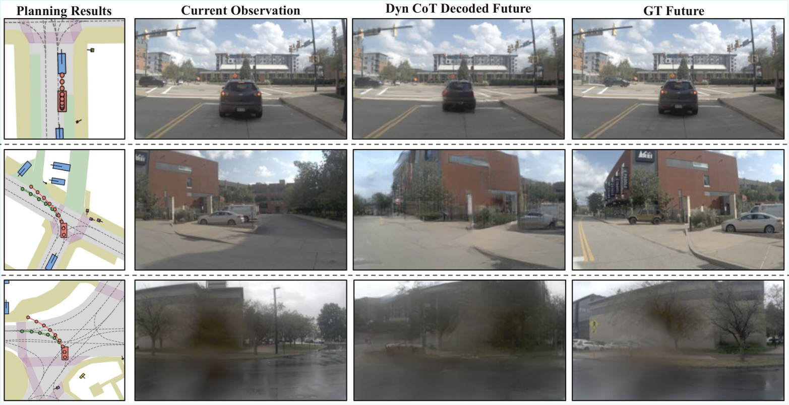

DynVLA: Learning World Dynamics for Action Reasoning in Autonomous Driving
1. 论文速览与证据链
一句话贡献
DynVLA 用 Dynamics Tokenizer 将未来演化压缩为 ego-centric 与 environment-centric tokens，VLA 在轨迹前先生成 Dynamics CoT，以 0.37 秒延迟改善 NAVSIM、Bench2Drive 和内部数据规划。
元数据与阅读定位
| 技术类型 | Dynamics chain-of-thought for driving |
|---|---|
| 关键词 | DynVLA、Dynamics CoT、Dynamics Tokenizer、ego/environment decoupling、SFT、RFT、NAVSIM、Bench2Drive |
| 开源情况 | 项目页公开；代码、权重和 70 万帧内部数据不可得部分需区分 |
| 适合程度 | 很高：以紧凑 dynamics token 替代文本/未来图像 CoT |
从哪里开始读
Dynamics Tokenizer 从未来序列抽取并量化 dynamics tokens，分为 ego-centric 与 environment-centric；VLA 在 action tokens 前自回归生成 Dynamics CoT。Stage 1 学 tokenizer/reconstruction，Stage 2 SFT 学 dynamics→action 序列，Stage 3 RFT 直接优化规划。 阅读时先确认中间表示是否在部署端运行，再用主结果和消融判断它究竟改善了感知、动态预测还是动作生成。
图表证据链
| # | 原始图 | 支持的主张与边界 |
|---|---|---|
| 1 | 三类 CoT 的效率与信息密度 | teaser 对比文本、未来图像和 dynamics token，直观展示冗余与延迟差别。 |
| 2 | DynVLA 总体架构 | Dynamics Tokenizer、ego/environment 分支和轨迹生成按训练与推理路径连接，是方法的核心信息流。 |
| 3 | 分阶段训练 | tokenizer、Dynamics CoT SFT 与 RFT 顺序展开，说明动态表示和动作策略不是一次端到端得到。 |
| 4 | 未来动态重建 | 重建对照用于检查紧凑 token 是否保留交通体和 ego 演化；背景细节并非目标。 |
| 5 | 不同 CoT 的轨迹定性比较 | 同场景下文本、视觉和 dynamics 路线的轨迹差异显示未来状态建模对交互决策的作用。 |
| 6 | 失败案例 | 遮挡或复杂交互中的错误 dynamics 会传递到轨迹，揭示 tokenizer uncertainty 仍未解决。 |
2. 问题与动机
问题定义
文本 CoT 缺少细粒度时空信息且解码慢，视觉 CoT 预测稠密未来图像又包含大量背景冗余。驾驶需要一种紧凑、可解释且与动作决策直接相关的未来动态中间变量。
现有路线为何不足
无 CoT VLA 直接输出轨迹；AutoVLA 等文本路线用 scene description/meta action；Visual CoT 用 future image/flow。DynVLA 借鉴 latent action tokenizer，但针对 ego-viewpoint 变化和多交通体交互专门解耦动态。
作者的解题假设
DynVLA 用 Dynamics Tokenizer 将未来演化压缩为 ego-centric 与 environment-centric tokens，VLA 在轨迹前先生成 Dynamics CoT，以 0.37 秒延迟改善 NAVSIM、Bench2Drive 和内部数据规划。 该假设只有在统一骨干、数据和评测下仍带来增益时才成立。
4. 方法、表示与训练
端到端信息流
Dynamics Tokenizer 从未来序列抽取并量化 dynamics tokens，分为 ego-centric 与 environment-centric；VLA 在 action tokens 前自回归生成 Dynamics CoT。Stage 1 学 tokenizer/reconstruction，Stage 2 SFT 学 dynamics→action 序列，Stage 3 RFT 直接优化规划。
核心表示
ego dynamics 表示自车运动导致的视角和道路变化，environment dynamics 表示其他交通体的独立演化；解耦损失减少两者互相污染。少量离散 token 比 future image 更紧凑，又比文本更接近连续世界状态。
训练阶段与目标
公开评测使用 NAVSIM 与 Bench2Drive，另有 70 万帧内部数据。tokenizer 通过 future reconstruction 和 codebook 学习，VLA 依次经历 SFT、RFT；论文还分析 codebook activation、token 数和强制 dynamics 条件。
推理与部署路径
当前多相机观测先生成短 Dynamics CoT，再生成轨迹；无需像素级 future rollout。单 H800 上 dynamics latency 0.37s，接近 meta-action 0.43s，远低于 scene description 3.04s 和 future image/flow 2.29s。
三类 CoT 的效率与信息密度

DynVLA 总体架构

分阶段训练

5. 实验、结果与消融
数据集、任务与协议
NAVSIM 以 NC、DAC、TTC、comfort、ego progress 与 PDMS 测开环规划；Bench2Drive 测长时域闭环 driving score/route completion；内部集报告 ADE 和 collision rate。三类评测补足单一 benchmark 的盲区。
主要定量结果
NAVSIM Dynamics CoT PDMS 87.2，对 no-CoT 85.6、future image 86.3、optical flow 86.4；Bench2Drive 多项指标最佳。内部数据 ADE 1.215m、collision 4.04‱，优于 DriveVLA-W0(ViT) 的 1.344m/5.13‱。
消融与因果解释
CoT 内容对照同时给出延迟与 PDMS，证明紧凑 dynamics 在效果/效率之间占优；训练阶段消融区分 tokenizer、SFT 与 RFT。强制 dynamics 和 codebook 图揭示 token 有一定结构，但不能保证每个 code 都具人类可读语义。
证据没有覆盖什么
从当前评测覆盖看，tokenizer 依赖未来监督，罕见交互若不在训练分布会产生错误 dynamics；0.37s 对高频控制仍偏高。内部数据不可访问，codebook 语义和闭环 safety calibration 尚不充分。
未来动态重建

不同 CoT 的轨迹定性比较

失败案例

6. 复现路径与工程风险
最小可行复现
公开复现可从 NAVSIM 开始：训练 future dynamics tokenizer，验证 reconstruction 与 codebook usage，再把 tokens 插到轨迹前做 SFT/RFT。Bench2Drive 闭环需 CARLA 环境；内部数据结果不可完全复现，应明确分开。
验收标准
NAVSIM Dynamics CoT PDMS 87.2，对 no-CoT 85.6、future image 86.3、optical flow 86.4；Bench2Drive 多项指标最佳。内部数据 ADE 1.215m、collision 4.04‱，优于 DriveVLA-W0(ViT) 的 1.344m/5.13‱。 复现时至少应恢复相同方向的增益，并报告同一随机种子、数据规模和延迟预算。
复现风险清单
| 环节 | 具体风险 |
|---|---|
| 数据 | 需取得论文列出的训练数据、相同切分与时间同步；未公开数据必须单列。 |
| 模型 | 需固定视觉/VLM 骨干、tokenizer 与动作头，避免把模型规模差异误判为方法收益。 |
| 训练 | 按论文阶段顺序复现，并保留无 latent/world objective 的严格对照。 |
| 评测 | 同时复现主指标、消融和失败类型；开环结果不能替代闭环安全。 |
| 硬件 | 公开复现可从 NAVSIM 开始：训练 future dynamics tokenizer，验证 reconstruction 与 codebook usage，再把 tokens 插到轨迹前做 SFT/RFT。Bench2Drive 闭环需 CARLA 环境；内部数据结果不可完全复现，应明确分开。 |
7. 分析、局限与边界
最有价值的贡献
综合方法与实验证据，DynVLA 用 Dynamics Tokenizer 将未来演化压缩为 ego-centric 与 environment-centric tokens，VLA 在轨迹前先生成 Dynamics CoT，以 0.37 秒延迟改善 NAVSIM、Bench2Drive 和内部数据规划。
作者结论的适用边界
将结论外推前需要保留以下边界：tokenizer 依赖未来监督，罕见交互若不在训练分布会产生错误 dynamics；0.37s 对高频控制仍偏高。内部数据不可访问，codebook 语义和闭环 safety calibration 尚不充分。
可信的后续实验
可把 DynVLA 与 uncertainty-aware planner 结合：预测多个 dynamics token 假设及概率，由 safety layer 评估轨迹；也可蒸馏到轻量并行 token predictor，把 0.37s 进一步压到实时控制预算。
8. 组会问答与阅读结论
Q1. Dynamics CoT 比文本 CoT 多了什么？
A：它编码未来时空演化而非语言描述，更贴近轨迹决策。
Q2. 为何解耦 ego/environment？
A：自车视角变化与外部交通体运动来源不同，混合会让 tokenizer 难学。
Q3. 效果和延迟？
A：NAVSIM PDMS 87.2、0.37s；scene description 为 85.3、3.04s。
Q4. 闭环证据在哪里？
A：Bench2Drive 长时域闭环指标改善，但真实车仍未验证。
Q5. 主要不可复现项？
A：70 万帧内部数据以及可能未发布的完整权重/训练细节。
我的阅读笔记
结合本批论文的比较，我的后续关注点是：可把 DynVLA 与 uncertainty-aware planner 结合：预测多个 dynamics token 假设及概率，由 safety layer 评估轨迹；也可蒸馏到轻量并行 token predictor，把 0.37s 进一步压到实时控制预算。